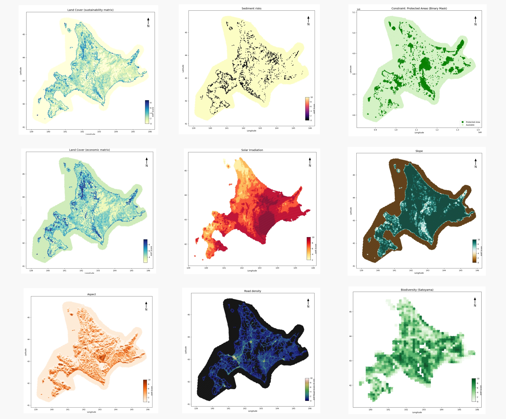

Site Selection for Solar Energy in Japan
Uncovering Spatial Tensions Between Economy and Ecology
As Japan accelerates its renewable energy transition toward achieving carbon neutrality by 2050, solar power is projected to increase from 6.7% of the national energy mix in 2019 to as much as 16% by 2030. However, the country’s limited land availability and complex geography pose significant challenges for solar site selection. This study examines the spatial tension between techno-economic priorities and environmental considerations in the siting of solar power plants across Japan. Whereas existing studies often merge ecological and economic criteria into a unified suitability index, this research introduces a dual-suitability framework that isolates and contrasts these logics.
Using the Analytic Hierarchy Process (AHP), we develop two independent suitability maps—one reflecting economic criteria (e.g., slope, irradiation, proximity to infrastructure) and the other reflecting environmental factors (e.g., biodiversity, protected areas).We then assess the spatial alignment between each suitability map and the actual distribution of solar power plants using Bivariate Moran’s I to quantify spatial autocorrelation and mismatch. Local spatial clusters are identified through LISA (Local Indicators of Spatial Association) and visualized via an interactive map that highlights areas of convergence and conflict.
Findings indicate that economic considerations disproportionately drive current site selection, often at the expense of ecological integrity. The proposed framework offers a transparent and reproducible tool to support more balanced, accountable, and ecologically responsible decision-making in renewable energy planning.

Most site selection studies merge economic and environmental criteria into a single score often diluting or overshadowing ecological priorities.
-
➤ In reality, the same factor (e.g., land cover) can score high economically but low environmentally. Creates conflicting interpretations and biased classifications
➤ This study does not aim to produce a single suitability map. Instead, it highlights how economic logic often dominates environmental logic in solar siting
➤ This study provides a dual-mapping framework to visualize conflict zones. It helps identify areas where economic and ecological priorities diverge. It supports transparent decision-making and encourages deeper investigation by planners and experts
Techno-Economic Suitability
This map represents areas most suitable for solar deployment based on technical and economic conditions. Criteria were weighted and aggregated using the Analytic Hierarchy Process (AHP).
Socio-Environmental Suitability
This map highlights ecologically sensitive regions where solar development should be minimized. Suitability scores were derived using AHP based on environmental risk and conservation data.
Misaligned Deployment (SPP in Unsuitable Areas)
Techno-Economic mismatch
Socio-Environmental mismatch
Conflict Zones
Mismatch Between Economy & Ecology
This map visualizes areas where economic and environmental suitability assessments diverge, revealing zones of potential conflict. By contrasting both logics simultaneously, it helps identify sites where ecological concerns may be overridden by techno-economic incentives.